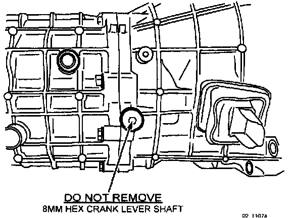
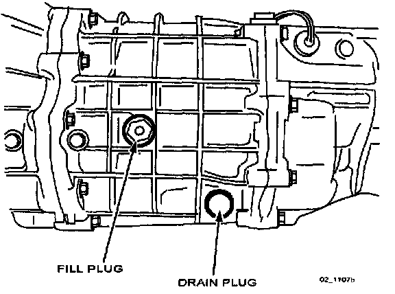

M/T - Won't Shift Into 5th or Reverse gears
05-012/021999-2003 MIATA - 6-SPEED MANUAL TRANSMISSION WILL NOT SHIFT INTO 5TH OR REVERSE GEARS
APPLICABLE MODEL(S)/VINs
1999-2003 Miata models with 6-speed manual transmission
DESCRIPTION
Transmission will not shift into 5th or reverse gears. Symptoms may occur after inspecting or changing gear oil.

NOTE:
DO NOT remove 8 mm-hex "Crank Lever Shaft" to drain/fill gear oil. Removal of the "Crank Lever Shaft" will allow the "5th / Reverse Counter Lever" to fall into the transmission causing no shift into 5th and reverse gears.

NOTE:
Only use 24 mm drain and fill plugs on other side of transmission when inspecting or changing gear oil.
Follow the procedure outlined below to correct the condition.
REPAIR PROCEDURE
1. Verify customer complaint.
2. Remove transmission assembly according to appropriate Workshop Manual (Section 05).
3. Disassemble transmission and retrieve "5th / Reverse Counter Lever".
4. Reinstall "5th / Reverse Counter Lever".
5. Reinstall 8 mm-hex "Crank Lever Shaft".
a. Apply sealant to the threads.
b. Torque to 32-42 N.m. (24-34 lb.ft.)
6. Reinstall transmission assembly according to WSM (Section 05).
7. Verify repair.

Disclaimer